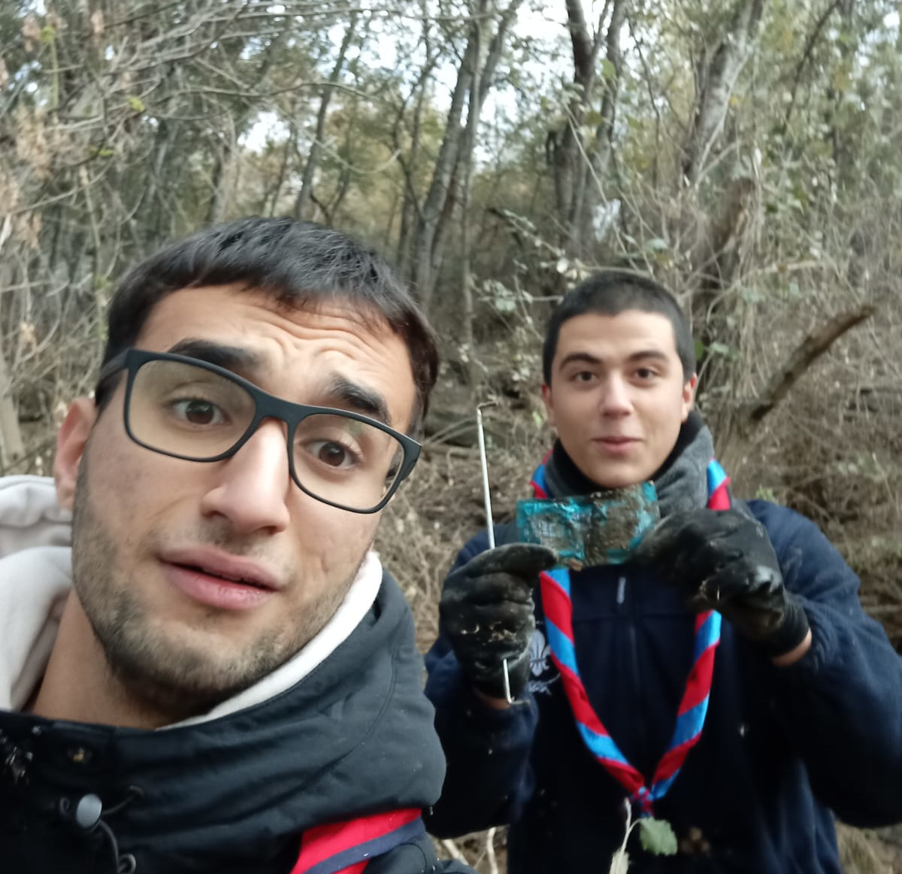

Recogida del basura en la orilla del río Jarama
En el grupo scout que frecuento realizamos una serie de voluntariados
periódicamente. Esta vez fuimos a recoger basura a las orillas del río Jarama.
Fue mi primer voluntariado medioambiental y modificó la forma en la que pensaba
acerca de los desechos. Siempre había pensado que era un problema de suma importancia
, pero nunca había presenciado lo demencialmente sucio que podría estar un río que
conecte con Madrid. Entre los objetos que encontré y retiré con mi pareja de recogida
estaban: un neumático de un todoterreno, 13 botellas de plástico, 22 bolsas de gusanitos,
una cantidad imprecendete de palitos de chupa-chups, redes de apoyo para que los árboles crezcan
, 4 botellas de vidrio y 2 preservativos. Todo esto, obviando los residuos únicos que figuraban
en la categoría de "misceláneo"(por ejemplo, azulejos varios). Retirando toda esta basura
tuvimos un impacto directo positivo en el medioambiente y conseguimos reducir la contaminación de dicha zona.
Además, al lado de nuestra zona había un lago artificial (una mina abierta inundada hace 40 años) que
presentaba una gran fauna y flora, de forma que tuvimos un impacto directo en la calidad de vida
del ecosistema.

Recogida de regalos
Krecer es una organización que se dedica a apoyar en niños pequeños en situaciones de dificultad. En el
Ramiro unas compañeras organizaron una recogida de regalos en la que no participé, pero luego necesitaron gente
para transportar los juguetes desde mi instituto al dónde estaban ubicados los niños. Se organizaron dos viajes y
asistí a los dos para transportar los regalos por el metro. Puede que suene monótono, pero se nos plantearon bastantes
dificultades a la hora de transportar los juguetes. La primera: la excesiva cantidad de estos. En un principio
estaba estipulado que iban a haber únicamente un viaje, pero se nos planteó como imposible esa posibilidad
al ver la estrambótica cantidad de juguetes que se habían donado. Aunque no mantuve un contacto directo con los niños, me figura
que se les hicieron llegar la mayoría de los juguetes y que tuvimos un impacto muy positivo en su calidad de vida, ya que ese taller
es necesario para sus familias y para la vida social de los niños, y su desarrollo emocional-social.
Sui Géneris
El proyecto Sui Géneris es mi mayor aportación a la comunidad y consiste en un taller de programación
que organicé y dirigí con otros dos compañeros con el propósito de enseñar python a cualquier alumno
del Ramiro de Maeztu o a cualquier persona que quiese asistir al taller. El taller tomó lugar todos los
lunes no festivos del curso sin excepción, cada sesión durando un total de dos horas. Se estima que a lo
largo del curso se hayan impartido unas 40 horas de este taller de python, en el que nuestros alumnos
aprendieron fudamentos de python. Para las sesiones iniciales, dediqué tiempo a crear una serie de documentos que sirvieran a los alumnos a instruirse
en las materias básicas: para repasar, por si no podían asistir a una clase o para gente que no asistiera al taller. Los
documentos se hallan en
esta carpeta.
A lo largo del curso siguimos un "roadmap" o programa para organizar los contenidos. Decidimos que a principio de curso
íbamos a enseñar todo lo básico de python, para proseguir con la preparación de problemas de codewars. Este concurso,
mencionado anteriormente, se convirtió en el foco del taller para instruir a los miembros con suficiente edad y que
pudieran participar y obtener una buena posición. Aún así, estos problemas constituyen una toma de contacto con la
programación al requerir el uso de python, no la mera memorización de "keywords" o "palabras del lenguaje" como
"for", "in", "True", "float" y demás, sino su uso y compresión, de forma que sentamos una base para que todos los asistentes
entendieran el funcionamiento de este lenguaje. Dinamizamos y seguimos el desarrollo de todos los
educandos, al explicar como se resolvían ciertos problemas y dejar tiempo para la resolución de otros.
Más avanzado el año, empezamos a enseñar los diferentes módulos de python, con el objetivo de aumentar el alcance
y la compresión de nuestros alumnos. Explicamos como utilizar principalmente los módulos turtle y math y yo di una clase de
redes neuronales para hacerlas más cercanas al público general, ya que se perciben a las inteligencias artificiales como
una tecnología extremadamente compleja, que lo es, pero se puede entender su funcionamiento interno lo que tiene un
efecto positivo en la comunidad, al proveerles de conocimientos acerca de nuevas tecnologías.
Aquí se pueden observar algunos proyectos que realizamos todos con el modulo turtle.
Simulación de un tiro parábolico con caída y representación de una función logarítmica(añadiendo
una imagen al ratón)(aportación de un alumno):
Todos estos proyectos sirvieron para instruir a los alumnos en el arte de la programación y explicarles las utilidades
prácticas que podría tener un lenguaje de programación como python. Además, todos estos proyectos los hicimos en equipo
y fomentando las intervenciones de los alumnos para que se aprendieran consistentemente. Los vídeos que se muestran, son
fruto del trabajo de toda la clase y no solo de los coordinadores.
El taller de Sui Géneris ha sido muy fructífero a la hora de enseñar a la comunidad educativa los fundamentos de python, y
personalmente ha constituido un trabajo en equipo al tener que los tres coordinadores cooperar en la preparación de las lecciones
y la elaboración de los documentos. Me ha servido para mejorar mis capacidades de enseñanza, mi capacidad para cooperar con
otros y mi implicación en la comunidad.
Ayuda mutua
Siempre me ha gustado cuidar y enseñar de niños, en los scouts organizmos cumpleaños pagados, pero en ese momento
nunca había hecho realmente un servicio a la comunidad relacionado con la enseñanza. Cuando se me presentó la oportunidad,
no dudé en apuntarme
al CAS de ayuda mutua. Al principio, se me presentó el reto de empezar a enseñar, teniendo en cuenta que nunca
había enseñado conceptos (solo haberles organizado juegos). Con el tiempo, fuí adquiriendo confianza y desarrollé
habilidades de enseñanza mientras ayudaba a niños a aprobar sus exámenes de matemáticas. Me hubiera gustado ir
a ayuda mutua más. Mi plan inicial era ir todos los martes a ayudar, pero el segundo trimestre me sobrepasó y
no asistí mucho. A pesar de ello pudé ir casi todos los martes del primer y tercer trimestre, además de un jueves
en el que no había casi asistencia de mis compañeros. Los niños necesitan alguien que les ayude en todo momento, esto
fue una de las cosas que aprendí. El segundo año dejé de asistir debido a que asumí la dirigencia del taller de Sui Géneris.
ARBA
Desde pequeño he estado rodeado por la naturaleza, pero nunca hice nada para repararla o ayudar al medio-ambiente.
Fue en la feria CAS, en el primer año, cuando me metí al grupo de ARBA. El procedimiento normal en el vivero ubicado
cerca de la estación de lago constaba
de cavar un agujero en el suelo con una pala y luego insertar un retoño de un árbol para que posteriormente creciera.
Otros días, recortámos
envases de leche para insertar semillas y tierra para que los retoños previamente mencionados crecieran. Alguna otra
vez cogíamos semillas
y le quitábamos una pulpa para luega sembrarlas en tierra. Después de este año, he podido brindar un servicio a la
comunidad y mejorar
un poco el medio-ambiente, reducir un poco mi huella de carbono. Me ha aportado una conciencia ecológica que he podido poner en uso en varias
ocasiones. Puede que esta anécdota sea un poco banal, pero una vez en los scouts comimos dos bolsas de pistachos, nos olvidamos y yo y un amigo
acabamos recogiendo las cáscaras porque aunque sean biodegradables no estábamos seguros de que el entorno de montaña específico en el que estábamos
poseyera las encimas necesarias para descomponer ese tipo de pistacho, o de si las vacas de ganado iban a ingerirlos y posiblemente desarrollar
problemas estomacales. En total, asistí 6 veces al vivero: 2 por trimestre.
Primer trimestre. Plantando retoños para que crezcan árboles posteriormente.
Segundo trimestre. Foto grupal después de haber pelado cáscaras de semillas.
Tercer trimestre. Insertando tierra y semillas en un envase para que crezca en un futuro.